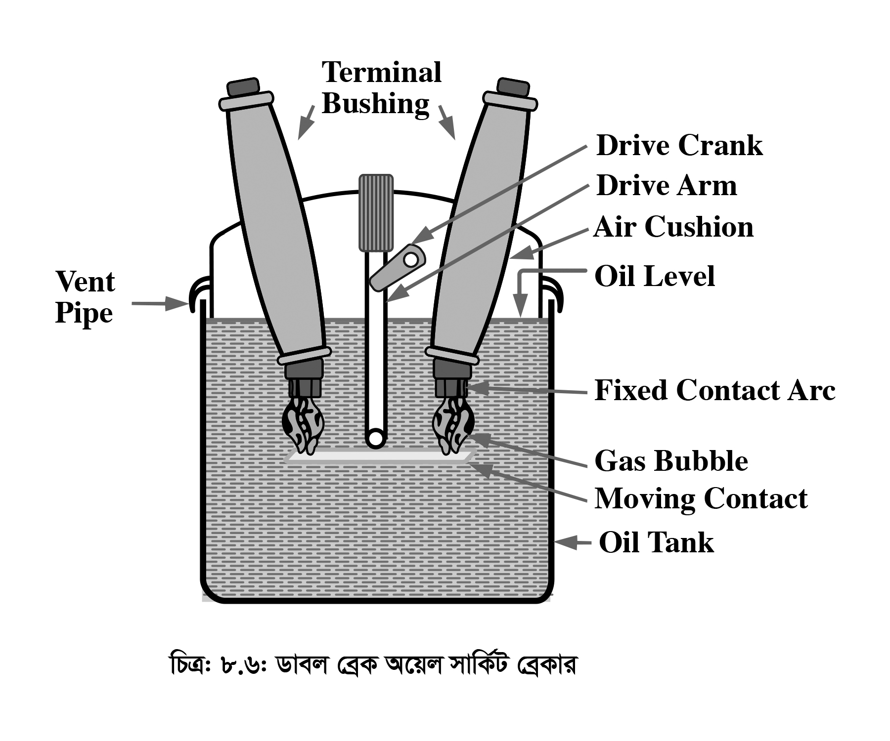

<div class="content">
    <div class="scroller">
        <p class="page-no">142</p><br><br>
        <h2></h2>
        <div>
            <h4 class="topic-title-no">(ii)</h4>
            <h4 class="topic-title"><b>
                    <span class="tooltip_my">ডাবল ব্রেক অয়েল সার্কিট ব্রেকার
                        <span class="tooltiptext">
                            <span class="alertText"></span>
                            <audio controls class="audio">
                                <source src="audio/142/142-1.mp3" type="audio/mpeg">
										Your browser does not support the audio element.
                            </audio>
                        </span>
                    </span>
                </b></h4>
            <p>চিত্রে একটি প্লেন ব্রেক অয়েল সার্কিট ব্রেকার (ডাবল ব্রেক টাইপ) দেখানো হলো। একটি আবহাওয়ারোধক মজবুত ইস্পাতের ট্যাংকের সাহায্যে এটি তৈরি করা হয় এবং ট্যাংকের চারিদিকে ইনসুলেটিং লাইনিং দেওয়া থাকে। ট্যাংকটি ট্রান্সফরমার তেল দিয়ে ভর্তি করা থাকে। ব্রেকারের চলমান কণ্টাক্ট ও স্থির কণ্টাক্টসমূহ ট্যাংকের তেলের মধ্যে ভালোভাবে ডুবানো থাকে। সার্কিটের স্বাভাবিক অবস্থায় চলমান কণ্টাক্টগুলো স্থির কণ্টাক্ট এর সাথে সংযুক্ত থাকে। অস্বাভাবিক অবস্থায় বেশি কারেন্ট প্রবাহের ফলে ট্রিপ কয়েলের মাধ্যমে চলমান কণ্টাক্টকে বিপরীত দিকে নিয়ে সার্কিটের সংযোগ বিচ্ছিন্ন করে। এ সময় চলমান কণ্টাক্ট এর উভয় পয়েন্টই একই সময়ে স্থির কণ্টাক্ট হতে বিচ্ছিন্ন হয় বিধায় একে ডাবল ব্রেক সার্কিট ব্রেকারও বলা হয়।
            </p>
        </div>
        <p class="c-align">
            
        </p>

        <p class="c-align">চিত্র- ৮.৬: ডাবল ব্রেক অয়েল সার্কিট ব্রেকার</p>

        <div>
            <h4 class="topic-title-no"></h4>
            <h4 class="topic-title"></h4>
            <p>শর্ট সার্কিট অবস্থায় কণ্টাক্ট বিচ্ছিন্ন হওয়ার পরেই সৃষ্ট প্রচন্ড আর্ক, তেলের মাধ্যমে নির্বাপিত হয়। এ ব্রেকারের ট্যাংকে রক্ষিত তেল আর্ক নির্বাপণ ও ইনসুলেটর হিসেবে কাজ করে। যেহেতু এ ব্রেকারে অন্য কোনো ব্যবস্থা গ্রহণ না করে, শুধুমাত্র তেলের স্বাভাবিক চাপেই আর্ক নির্বাপিত হয়, তাই একে প্লেন ব্রেক অয়েল সার্কিট ব্রেকার বলে। আর্কজনিত উত্তাপে যে গ্যাস ও বুদবুদের সৃষ্টি হয়, তা বের করে দেওয়ার জন্য ট্যাংকের উপরিভাগে একটি ভেন্ট পাইপ লাগানো থাকে। এখানে উল্লেখ্য যে, কণ্টাক্ট বিচ্ছিন্ন হওয়ার সময় সৃষ্ট আর্কজনিত উত্তাপ এত বেশি হয় যে (প্রায় 5000<sup>o</sup> কেলভিন) তাতে প্রচুর পরিমাণ বিস্ফোরকজাতীয় গ্যাস সৃষ্টি হয় এবং এগুলো বের করার ব্যবস্থা না নিলে মারাত্মক বিপদের আশঙ্কা থাকে। চলমান কণ্টাক্টসমূহ বিচ্ছিন্ন হওয়া শুরু করলে আর্কের দৈর্ঘ্য বৃদ্ধি পেতে থাকে। এ সময় তাপমাত্রা কমে যাওয়ার ফলে গ্যাস উৎপত্তির হার কমতে থাকে। কণ্টাক্টগুলোর দূরত্ব যখন একটা নির্দিষ্ট মানে (Critical value) প্রাপ্ত হয় এবং আর্কের কারেন্ট যখন ঐ অবস্থায় শূন্যমানে পৌঁছে, তখন আর্ক নির্বাপিত হয়। এতে আর্ক নির্বাপণের জন্য অপেক্ষাকৃত দীর্ঘ ও অবাঞ্ছিত সময়ের প্রয়োজন হয়। বেশি ক্ষমতাসম্পন্ন সার্কিট ব্রেকারের ক্ষেত্রে চলমান কণ্টাকগুলোকে স্থির কণ্টাক্ট হতে এত দূরে সরিয়ে নিতে হয় যে, এটি বাস্তব ক্ষেত্রে ঝামেলাপূর্ণ। আর্ক নির্বাপণের এ অসুবিধা থাকায় সাধারণত 11 kV, 150 MVA এক অধিক সিস্টেমে এ ব্রেকার ব্যবাহর করা হয় না। সাধারণত কম ক্ষমতাসম্পন্ন সার্কিট ব্রেকারের ক্ষেত্রে তিনটি ফেজকে তিনটি আলাদা ট্যাংকে রাখার ব্যবস্থা থাকে।
            </p>
        </div>

        <div style="margin-bottom: 24px;">
            <h4 class="topic-title-no">Advantages : The advantages of oil as an arc quenching medium are:</h4>
            <h4 class="topic-title"></h4>
            <p>
            </p>
        </div>

        <div>
            <h4 class="topic-title-no">(1)</h4>
            <h4 class="topic-title">It absorbs the arc energy to decompose the oil into gases which have excellent cooling properties. </h4>
            <p>
            </p>
        </div>

        <div>
            <h4 class="topic-title-no">(2)</h4>
            <h4 class="topic-title">It acts as an insulator and permits smaller clearance between live conductors and earthed components </h4>
            <p>
            </p>
        </div>

        <div>
            <h4 class="topic-title-no">(3)</h4>
            <h4 class="topic-title">The surrounding oil presents cooling surface in close proximity to the arc.  </h4>
            <p>
            </p>
        </div>
    </div>
</div>